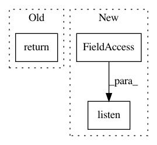

2e10d7223a935c296cbc51fbb70acd6618eadd0f,homeassistant/test.py,,ensure_homeassistant_started,#,33
Before Change
HAHelper.core = core
return HAHelper.core["bus"], HAHelper.core["statemachine"]
// pylint: disable=too-many-public-methods
class TestHTTPInterface(unittest.TestCase):
After Change
if not HAHelper.hass:
hass = ha.HomeAssistant()
hass.bus.listen("test_event", len)
hass.states.set("test", "a_state")
hah.HTTPInterface(hass, API_PASSWORD)
In pattern: SUPERPATTERN
Frequency: 3
Non-data size: 3
Instances
Project Name: home-assistant/home-assistant
Commit Name: 2e10d7223a935c296cbc51fbb70acd6618eadd0f
Time: 2014-04-24
Author: Paulus@PaulusSchoutsen.nl
File Name: homeassistant/test.py
Class Name:
Method Name: ensure_homeassistant_started
Project Name: tensorflow/tensorboard
Commit Name: 2670430ff3c85a98a50efddd9ba8581710fd111d
Time: 2017-12-05
Author: cais@google.com
File Name: tensorboard/plugins/debugger/debugger_plugin_loader.py
Class Name:
Method Name: _ConstructDebuggerPluginWithGrpcPort
Project Name: home-assistant/home-assistant
Commit Name: ba179bc63883eb37278de2229c9a5566b6aa5be6
Time: 2015-01-09
Author: paulus@paulusschoutsen.nl
File Name: homeassistant/components/switch/__init__.py
Class Name:
Method Name: setup